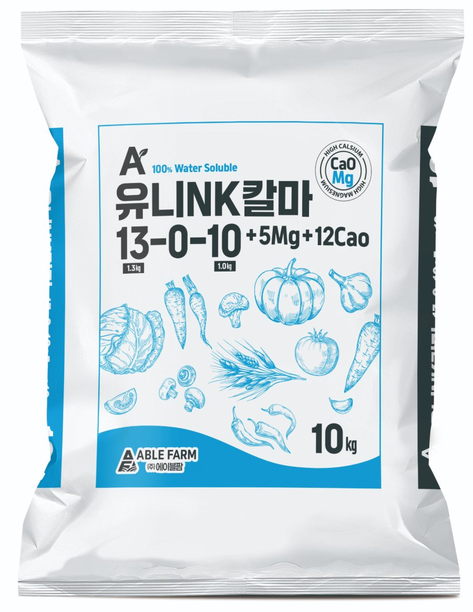

관주용
유니NK칼마
13-0-10 +5Mg +12CaO
100% 수용성 칼슘·마그네슘 복합비료. 세포 강화와 균형 잡힌 미량요소 공급에 적합합니다.
사용 방법
- 쓰는 법
- 웃거름(추비) 전용 · 포기 사이·이랑 옆 흙에 뿌립니다. 관주는 10a(300평)당 3~5kg을 물 1톤 이상에 녹여 줍니다
- 사용 시기
- 작물마다 다릅니다 — 아래 작물별 살포량 표
- 적용 작물
- 배추 (가을), 배추 (고랭지), 무, 마늘·양파, 대파, 시금치·상추, 부추, 당근, 생강, 고추, 가지, 오이, 토마토 (시설), 참외·수박 (시설), 딸기 (시설), 사과·배·감, 복숭아, 포도, 밤, 벼 (이삭거름)
- 규격
- 10kg
작물별 살포량
10a = 300평 = 1,000㎡ 기준 · 10kg 포대
| 작물 | 300평당 총량 | 1회량 | 시기·횟수 |
|---|---|---|---|
| 배추 (가을) | 65~90kg6.5~9포 | 22~30kg | 정식 후 15일 간격 3회 |
| 배추 (고랭지) | 80~110kg8~11포 | 27~37kg | 정식 후 15일 간격 3회 |
| 무 | 70~95kg7~9.5포 | 23~32kg | 본잎 5~6매 ~ 뿌리 비대 초기 3회 |
| 마늘·양파 | 70~90kg7~9포 | 35~45kg | 월동 후 2월 하순~3월 2회 |
| 대파 | 45~65kg4.5~6.5포 | 15~22kg | 생육 중 2~3주 간격 3회 |
| 시금치·상추 | 45~60kg4.5~6포 | 22~30kg | 생육 중·수확 시작기 2회 |
| 부추 | 65~70kg6.5~7포 | 22~23kg | 수확 후마다 나눠서 3회 |
| 당근 | 55~70kg5.5~7포 | 28~35kg | 파종 30~40일 후·뿌리 비대기 2회 |
| 생강 | 65~70kg6.5~7포 | 22~23kg | 6~8월 3회 |
| 고추 | 40~45kg4~4.5포 | 13~15kg | 정식 25~30일 후부터 25~30일 간격 3회 |
| 가지 | 45~55kg4.5~5.5포 | 15~18kg | 정식 25~30일 후부터 25~30일 간격 3회 |
| 오이 | 40~55kg4~5.5포 | 3~5kg물에 녹여 관주 | 수확 시작 후 7~10일 간격 관주 |
| 토마토 (시설) | 25~40kg2.5~4포 | 3~5kg물에 녹여 관주 | 1화방 착과 후 7~10일 간격 관주 |
| 참외·수박 (시설) | 25~40kg2.5~4포 | 12~20kg | 착과 후 과실 비대기 2회 |
| 딸기 (시설) | 20~30kg2~3포 | 3~5kg물에 녹여 관주 | 개화·수확기 7~10일 간격 관주 |
| 사과·배·감 | 20~25kg2~2.5포 | 10~12kg | 과실 비대기(6~7월) 2회 |
| 복숭아 | 20~25kg2~2.5포 | 10~12kg | 과실 비대기 2회, 수확 1개월 전 중단 |
| 포도 | 20~30kg2~3포 | 10~15kg | 과실 비대기 2회, 착색기 전 중단 |
| 밤 | 25~35kg2.5~3.5포 | 12~18kg | 6~7월 2회 |
| 벼 (이삭거름) | 15~20kg1.5~2포 | 15~20kg | 출수 25일 전 1회 |
비료가 잎·줄기에 닿지 않게 하세요. 염류가 쌓인 하우스는 양을 절반으로 줄이세요. 인산 비료·황산염 비료와 한 통에 섞지 마세요.
우리 밭 면적으로 사용량 계산하기 →유니NK칼·칼마 살포 안내 (인쇄용 A4) →쇼츠: 겨울 하우스 잎 끝이 탄다면? →
제품 영상
겨울 하우스 웃거름 — 흡수 빠른 질산태, 유니NK칼·유니NK칼마 작물별 사용법
겨울 하우스에서 흡수가 빠른 질산태 웃거름으로 유니NK칼(15-0-15, CaO 17%, 붕소)과 유니NK칼마(13-0-10, MgO 5%, CaO 12%)를 쓰는 방법을 1분 26초로 정리한 에이블팜 제품 영상입니다. 딸기·토마토·오이는 7~10일 간격으로 300평에 1회 3~5kg을 물 1톤 이상에 녹여 관주하고, 참외·수박·시금치·상추·부추와 노지 작물 사용법도 담았습니다.